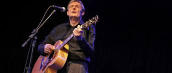

Existem três línguas oficiais na Bélgica: o neerlandês (falado por 59 por cento da população, especialmente em Flandres, no norte do país), o francês (falado por trinta por cento da população, especialmente na Valônia, no sul do país) e o alemão (falado por um por cento da população, especialmente no leste do país, na fronteira com a Alemanha).
A religião predominante no país é o cristianismo católico, que é professado por noventa por cento da população belga.
O país, especialmente a região de Flandres, tem uma grande tradição na pintura. Peter Paul Rubens (1577-1640), um dos mais importantes pintores da história da arte, não nasceu na Bélgica (nasceu em Siegen, na Alemanha) mas, por ter passado a maior parte de sua vida em Antuérpia, costuma ser incluído entre os pintores belgas. Antoon van Dyck (1599-1641) nasceu em Antuérpia, onde foi discípulo de Rubens. Jan van Eyck (1390-1441) é considerado o mais célebre dos primitivos pintores flamengos. Pieter Bruegel o velho (1525/1530-1569), assim como Rubens, não nasceu na Bélgica (nasceu provavelmente na cidade neerlandesa de Breda), mas é considerado pelos estudiosos um pintor flamengo por ter passado a maior parte de sua vida em Bruxelas. Mais contemporaneamente, destaca-se o valão René Magritte (1898-1967), um dos mais importantes pintores surrealistas.
Em Etterbeek, na região de Bruxelas, nasceu, em 1907, Georges Prosper Remi, mais conhecido como Hergé, um dos maiores desenhistas de histórias em quadrinhos do mundo. Sua criação mais famosa foi o personagem Tintim, cujas aventuras foram traduzidas para mais de quarenta línguas. Outro famoso desenhista de histórias em quadrinhos franco-belga foi Peyo (1928-1992), o criador dos Schtroumpfs (em Portugal, "Estrumpfes". No Brasil, "Smurfs").
Um alimento típico belga é o waffle (em neerlandês, wafel e, em francês, gaufre), que é uma massa de farinha, leite e ovos tostada em uma chapa quadriculada de ferro. Os waffles belgas tendem a ser mais volumosos e macios que os demais waffles, por serem muitas vezes fermentados. Os waffles belgas mais típicos têm cobertura apenas de açúcar de confeiteiro. Originalmente, os waffles eram produzidos para servir de hóstia na missa.
O chocolate belga é tido como o melhor do mundo. A Bélgica conheceu o chocolate quando estava sob domínio dos Habsburgos espanhóis, nos séculos XVI e XVII. Os espanhóis trouxeram o chocolate de suas colônias americanas e os belgas se tornaram mestres em sua confecção. Durante o período em que a Bélgica controlou o Congo Belga, muito do cacau utilizado nos chocolates belgas veio dessa colônia africana. Os mais típicos chocolates belgas são o amargo e o recheado, este último chamado praline.
A cerveja belga é reputada como uma das melhores do mundo. Existem muitas marcas belgas famosas internacionalmente, como a Leffe e a Stella Artois, porém o destaque entre as cervejas belgas fica com as cervejas produzidas por seis mosteiros trapistas belgas (Westmalle, Westvleteren, Chimay, Orval, Rochefort e Achel). Outra famosa cerveja belga é a lambic, uma cerveja de trigo feita com levedura natural presente no ar. A lambic é típica de Bruxelas.
Dois outros alimentos muito consumidos pelos belgas são os mexilhões e as batatas fritas. Os mexilhões costumam ser pescados no mar do Norte. Já as batatas fritas foram introduzidas na Bélgica pelos espanhóis nos séculos XVI e XVII e se tornaram a base da alimentação belga: toda refeição conta com batatas fritas, geralmente acompanhadas de maionese ou outro molho cremoso. Um estabelecimento típico belga é a frietkot, uma barraquinha que vende batatas fritas embaladas em um cone de papel, na rua.
As maiores festas populares belgas são o carnaval e o natal. Muitas cidades belgas realizam tradicionais festas de carnaval, como as cidades de Binche (festa que é patrimônio da humanidade, segundo a UNESCO), Herenthout, Fosses-la-Ville, Aalst e Stavelot. No natal, não é só o dia 25 de dezembro que é comemorado, mas também o dia 6 de dezembro, que é considerado o dia da chegada de São Nicolau, que irá trazer brinquedos para as crianças.
A música da Bélgica engloba tanto as manifestações da Valônia quanto as do Flanders. Até a segunda metade do século XIX, a Bélgica era rica em estudiosos e intérpretes, mas produziu poucos compositores originais notórios, entre eles César Franck (embora tenha feito a maior parte de sua carreira em Paris), François-Joseph Fétis e François-Auguste Gevaert. Nos anos 1870, contudo, a notória escola belga de violinistas foi iniciada com Charles de Bériot e continuada por seu discípulo Henri Vieuxtemps, que por sua vez foi mestre de Eugène Ysaÿe. Outro discípulo notório de Bériot foi Guillaume Lekeu. Também nesta época, os flamengos iniciaram um movimento para criar um estilo local que unificasse a elite e o restante da comunidade. Capitaneou este movimento Peter Benoit, sucedido por Jan Blockx. Outros músicos notórios deste período são Edgar Tinel, Paul Gilson, Auguste de Boeck, Flor Alpaerts, Artur Meulemans. Já na Valônia, destacaram-se Jean Absil (discipulo de Gilson), Raymond Chevireuil, August Baeyens, Marcelo Poot, Flor Peeters, Daniel Sternefeld, Louis de Meester, Jef van Durme. Um grupo denominado Synthétistes foi formado por Francis de Bourguignon, Gaston Brenta, André Souris, Albert Huybrechts e René Bernier. No século XX, Joseph Jongen é considerado o novo César Franck, e dentre seus contemporâneos notórios estão Victor Vreuls e Albert Dupuis.
 Clique para saber mais sobre a Culinária Belga